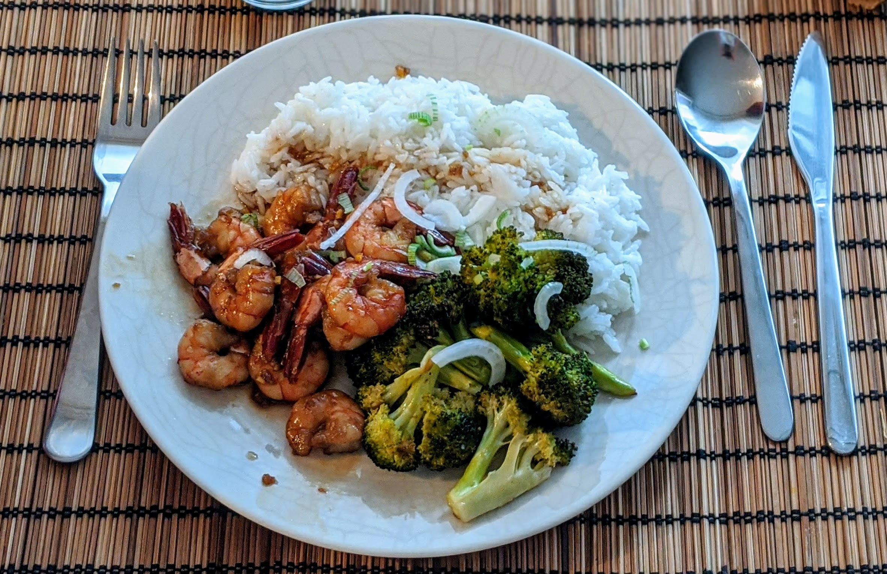

Crevettes au miel et sauce soja

Ici avec du riz et des brocolis rôtis.
Pour 2 personnes :
- 250g de crevettes crues
- 40mL de miel
- 40mL de sauce soja
- Une grosse gousse d'ail
- (Facultatif) Une petite phalange de gingembre
- (Facultatif) Un oignon frais
- Huile d'olive
- Éplucher et écraser l'ail, éplucher et emincer le gingembre, les mélanger dans un bol avec le miel et la sauce soja.
- Enlever la peau des crevettes, et les faire mariner dans la moitié de la mixture miel et soja au moins une demi-heure, possiblement une journée ou une nuit. Garder l'autre moitié de la sauce.
- Si on veut faire une jolie décoration, éplucher et émincedr l'oignon frais.
- Faire chauffer de l'huile d'olive dans une poêle à feu fort. Égoutter les crevettes et lorsque l'huile est bien chaude, les faire revenir sur une face 45 secondes, puis les tourner de l'autre côté, rajouter la sauce, et laisser chauffer une minute.
- Servir immédiatement les crevettes et leur sauce, avec du riz, des légumes verts, et parsemer le tout d'oignons frais.
Remarque : on peut laisser la queue des crevettes, c'est généralement plein de goût. Si on veut éviter que les invités n'aient à les équeuter dans l'assiette, enlever les queues une fois égouttées, puis les faire revenir quelques minutes dans pas mal d'huile bien chaude, et se servir de l'huile ainsi aromatisée pour donner un bon goût à du riz ou à du poisson poêlé.